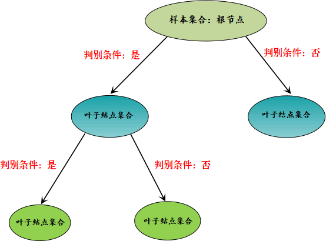
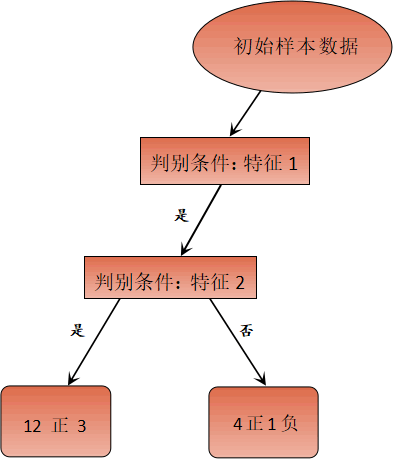
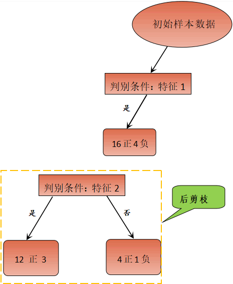

决策树算法和剪枝原理
本节我们对决策算法原理做简单的解析，帮助您理清算法思路，温故而知新。
我们知道，决策树算法是一种树形分类结构，要通过这棵树实现样本分类，就要根据 if -else 原理设置判别条件。因此您可以这样理解，决策树是由许多 if -else 分枝组合而成的树形模型。
上述过程就好比从众多的样本中提取“类别纯度”最高的样本集合，因此我们可以起一个形象化的名字“提纯”，过程示意图如下所示：
我们知道，每个数据集都会有各种各样的属性维度，总会出现一些属性维度样本分类实际上并不存在关联关系的情况。因此，在理想情况下决策树算法应尽可能少地使用这些不相关属性，但理想终归是理想，在现实情况下很难实现。那么我们要如何解决这种过拟合问题呢？这时就要用到“剪枝策略”。
“剪枝策略”这个名字非常的形象化，它是解决决策树算法过拟合问题的核心方法，也是决策树算法的重要组成部分。剪枝策略有很多种，我们根据剪枝操作触发时间的不同，可以将它们分成两种，一种称为预剪枝，另一种称为后剪枝。
上述两个剪枝策略，我们重要理解“预”和“后”。“预”就是打算、想要的意思，也就是在分支之前就被剪掉，不让分支生成，而“后”则是以后、后面，也就是分支形成以后进行剪枝操作。那么我要如何判断什么时候需要进行剪枝操作呢？其实很容易理解，如果剪枝后决策树模型在测试集验证上得到有效的提升，就判断其需要剪枝，否则不需要。
剪枝的操作对象是“分支的判别条件”，也就是减少不必要特征属性的介入，从而提高决策树分类效率，和测试集的预测能力。下面通过一个简单的例子进行说明：
某个样本数据集有两个类别（正类与负类），2 个特征属性，现在我们对 20 个样本进行分类。首先，在应用所有“特征属性”的情况下对样本进行分类。如下所示：
上图 2 使用了两个特征属性对样本集合进行分类，最后正确分类的概率是 12/20。如果只通过特征 1 进行分类，也就是剪掉冗余特征 2，最后的结果又是怎样呢？如下图所示：
通过后剪枝策略后，正确分类概率变成了 16/20。显而易见，剪枝策略使得正确分类的概率得到提高。
剪枝策略较容易理解，在实际情况中后剪枝策略使用较多。在分支生成后，使用后剪枝策略将冗余的子树及其判别条件直接剪掉，然后使用上个节点中占比最大的类做为最终的分类结果。
我们知道，决策树算法是一种树形分类结构，要通过这棵树实现样本分类，就要根据 if -else 原理设置判别条件。因此您可以这样理解，决策树是由许多 if -else 分枝组合而成的树形模型。
决策树算法原理
决策树特征属性是 if -else 判别条件的关键所在，我们可以把这些特征属性看成一个集合，我们要选择的判别条件都来自于这个集合，通过分析与计算选择与待分类样本最合适的“判别条件”。通过前面文章的学习，我们可以知道被选择的“判别条件”使得样本集合的某个子树节点“纯度”最高。上述过程就好比从众多的样本中提取“类别纯度”最高的样本集合，因此我们可以起一个形象化的名字“提纯”，过程示意图如下所示：

图1：决策树流程图
通过上述流程图可以得知，决策树算法通过判别条件从根节点开始分裂为子节点，子节点可以继续分裂，每一次分裂都相当于一次对分类结果的“提纯”，周而复始，从而达到分类的目的，在这个过程中，节点为“否”的不在分裂，判断为“是”的节点则继续分裂。那么你有没有考虑过决策树会在什么情况下“停止”分裂呢？下面列举了两种情况：图1：决策树流程图
1) 子节点属于同一类别
决策树算法的目的是为了完成有效的样本分类。当某个数据集集合分类完成，也就分类后的子节点集合都属于同一个类别，不可再分，此时代表着分类任务完成，分裂也就会终止。2) 特征属性用完
我们知道，决策树依赖特征属性作为判别条件，如果特征属性已经全部用上，自然也就无法继续进行节点分裂，此处可能就会出现两种情况：一种是分类任务完成，也就是子节点属于同一类别，还有另外一种情况就是分类还没有完成，比如，在判断为“是”的节点集合中，有 8 个正类 3 个负类，此时我们将采用占比最大的类作为当前节点的归属类。3) 设置停止条件
除上述情况外，我们也可以自己决定什么时候停止。比如在实际应用中我们可以在外部设置一些阈值，把决策树的深度，或者叶子节点的个数当做停止条件。决策树剪枝策略
决策树算法是机器学习中的经典算法。如果要解决分类问题，决策树算法再合适不过了。不过决策树算法并非至善至美，决策树分类算法最容易出现的问题就是“过拟合”。什么是“过拟合”我们在教程的开篇已经提及过，它指的机器学习模型对于训练集数据能够实现较好的预测，而对于测试集性能较差。“过拟合”使决策树模型学习到了并不具备普遍意义的分类决策条件，从而导致模型的分类效率、泛化能力降低。
决策树出现过拟合的原因其实很简单，因为它注重细节。决策树会根据数据集各个维度的重要性来选择 if -else 分支，如果决策树将所有的特征属性都用完的情况下，那么过拟合现象就很容易出现。我们知道，每个数据集都会有各种各样的属性维度，总会出现一些属性维度样本分类实际上并不存在关联关系的情况。因此，在理想情况下决策树算法应尽可能少地使用这些不相关属性，但理想终归是理想，在现实情况下很难实现。那么我们要如何解决这种过拟合问题呢？这时就要用到“剪枝策略”。
“剪枝策略”这个名字非常的形象化，它是解决决策树算法过拟合问题的核心方法，也是决策树算法的重要组成部分。剪枝策略有很多种，我们根据剪枝操作触发时间的不同，可以将它们分成两种，一种称为预剪枝，另一种称为后剪枝。
1) 预剪枝
所谓预剪枝，就是将即将发芽的分支“扼杀在萌芽状态”即在分支划分前就进行剪枝判断，如果判断结果是需要剪枝，则不进行该分支划分。2) 后剪枝
所谓后剪枝，则是在分支划分之后，通常是决策树的各个判断分支已经形成后，才开始进行剪枝判断。上述两个剪枝策略，我们重要理解“预”和“后”。“预”就是打算、想要的意思，也就是在分支之前就被剪掉，不让分支生成，而“后”则是以后、后面，也就是分支形成以后进行剪枝操作。那么我要如何判断什么时候需要进行剪枝操作呢？其实很容易理解，如果剪枝后决策树模型在测试集验证上得到有效的提升，就判断其需要剪枝，否则不需要。
剪枝的操作对象是“分支的判别条件”，也就是减少不必要特征属性的介入，从而提高决策树分类效率，和测试集的预测能力。下面通过一个简单的例子进行说明：
某个样本数据集有两个类别（正类与负类），2 个特征属性，现在我们对 20 个样本进行分类。首先，在应用所有“特征属性”的情况下对样本进行分类。如下所示：

图2：决策树过拟合问题
图2：决策树过拟合问题
上图 2 使用了两个特征属性对样本集合进行分类，最后正确分类的概率是 12/20。如果只通过特征 1 进行分类，也就是剪掉冗余特征 2，最后的结果又是怎样呢？如下图所示：

图3：决策树剪枝策略流程
图3：决策树剪枝策略流程
通过后剪枝策略后，正确分类概率变成了 16/20。显而易见，剪枝策略使得正确分类的概率得到提高。
剪枝策略较容易理解，在实际情况中后剪枝策略使用较多。在分支生成后，使用后剪枝策略将冗余的子树及其判别条件直接剪掉，然后使用上个节点中占比最大的类做为最终的分类结果。
关注公众号「站长严长生」，在手机上阅读所有教程，随时随地都能学习。内含一款搜索神器，免费下载全网书籍和视频。

微信扫码关注公众号